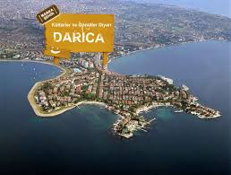
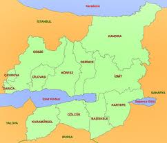

Kocaeli Ýlimizin Güzel Ýlçesi Darýca |
|
|  |
Darýca Kocaeli'nin Gebze Ýlçesi'nden ayrýlarak Bakanlar Kurulu kararýyla ilçe haline gelmiþtir. Ýzmit ile Ýzmit Körfezi MÖ 12. yüzyýlýn baþlarýnda Yunan kökenli kavimlerin istilasýna uðramýþ; bu kavimlerin istilasýyla birlikte bu bölgede baþlayan yerleþik düzenle tarihi geliþmelerinde baþlandýðý söylenebilir. Trakya'dan Anadolu içlerine göçen Frigler, daha sonra Misyalýlar Kocaeli bölgesinin ilk yerleþik halký olduklarý kabul edilir. |
|  |
Darýca ilçesi ,Kocaeli Ýl Merkezinin yaklaþýk 48 km. batýsýnda, Gebze Ýlçesinin güney batýsýnda, Kocaeli Yarýmadasý’nýn körfez þeridi üzerinde kurulmuþtur. Batýsýnda Ýstanbul Ýli Tuzla Ýlçesi, doðusunda Gebze Ýlçesi Eskihisar Köyü bulunmaktadýr. Yüz ölçümü yaklaþýk 24 km²’ dir. Denizden yüksekliði ortalama 28 metredir. Daha Fazla Bilgi için týklayýnýz. |